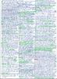
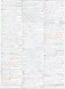
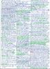
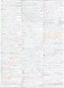

|
|
 |
A distributed system consists of several independent computers that communicate with each other over a network. Different distributed system architectures exist in the computer science. The most popular architecture is the Client-Server model. But especially in the parallel computing field, exist among others, Cluster Computing and Cloud Computing. Cloud Computing implies scalable services and the consolidation of compute and storage resources in large-scale resource centers. This consolidation offers the opportunity to redistribute resources, which have been used so far to keep the own resources running. At the same time, the users of a Cloud infrastructure services have the freedom to use their desired operating systems, programming languages and applications. In this course, the fundamentals of Cloud Computing and related technologies are discussed. Practical exercises are an important part of this course because they are essential for thee understanding of these technologies. The course (lectures, exercises and exam) is held in English language. Parts of the slide sets are based on the book Cloud Computing: Web-Based Dynamic IT Services, which was published in 2011 by Springer. ISBN: 978-3-642-20916-1 |
|
Aktualisierte und verbesserte Vorlesungsunterlagen befinden sich auf der Seite Cloud Computing im WS1617. Updated and improved lecture materials can be found on the web page of the course Cloud Computing in WS1617. |
| Date | Time | Room | Event | Topics |
| 27.03.2014 | 10:00-11:30 | 1-234 | Lecture | Slide set 1 + 2 |
| 14:15-15:45 | 1-236 | Lecture | Slide set 2 | |
| 03.04.2014 | 10:00-11:30 | 1-234 | Lecture | Slide set 3 |
| 10.04.2014 | 10:00-11:30 | 1-234 | Lecture | Slide set 3 |
| 17.04.2014 | 09:00-10:00 | 1-236 | Lecture | Slide set 4 |
| 10:00-11:30 | 1-234 | Lecture | Slide set 4 | |
| 24.04.2014 | 10:00-11:30 | 1-234 | Lecture | Slide set 4 + 5 + 6 |
| 01.05.2014 | Labor Day / Tag der Arbeit | |||
| 10:00-11:30 | 1-234 | Lecture | Slide set 6 + 7 | |
| 10:00-11:30 | 1-234 | Lecture | Slide set 8 | |
| 10:00-11:30 | 1-234 | Lecture | Slide set 9 | |
| 29.05.2014 | Ascension Day / Christi Himmelfahrt | |||
| 10:00-11:30 | 1-234 | Lecture | Slide set 10 | |
| 19.06.2014 | Corpus Christi / Fronleichnam | |||
| 10:00-11:30 | 1-234 | Lecture | Slide set 11 | |
| 15.07.2014 | 10:00-11:30 | 1-131 | Exam | The exam covers all slide sets and all exercise sheets |
| Slide Sets | Topics |
| Slide set 1 | Organisational information, Client-Server |
| Slide set 2 | Fundamentals, Laws and Limitations, Parallel Computers |
| Slide set 3 | Cloud Computing, Services and Concepts, Opportunities and Risks |
| Slide set 4 | Amazon Web Services (EC2, EBS, ELB), Google Compute Engine, HP Cloud Compute |
| Slide set 5 | Amazon Web Services (S3) und Google Cloud Storage |
| Slide set 6 | Platform Services (Google App Engine) |
| Slide set 7 | Private Infrastructure Services (IaaS), Private Platform Services (PaaS) |
| Slide set 8 | Cluster Computing |
| Slide set 9 | MapReduce/Hadoop |
| Slide set 10 | Web Services |
| Slide set 11 | Virtualization |
| Exercise sheets | Topics | |
| Exercise sheet 1 | Different Technologies, Client-Server Scenarios, Types of Clients | |
| Exercise sheet 2 | Amounts of Data - storing, transmitting and transporting Data | |
| Exercise sheet 3 | Data Rate, Laws and Limitations, Parallel Computers | |
| Exercise sheet 4 | Cloud Services, Service Categories and Offerings, Amazon Web Services, Virtual Desktop in the Cloud, Virtual Infrastructure Design Aspects | |
| Exercise sheet 5 | Web Server with persistent Storage, High Throughput Cluster of virtual Web Servers | |
| Exercise sheet 6 | Different Storage Solutions for a virtual High Throughput Cluster, Financial Aspects | |
| Exercise sheet 7 | AWS Import/Export vs. Internet, Interacting with Storage Services, Different Cloud Services, Functioning of some Cloud Services | |
| Exercise sheet 8 | Google App Engine, Sudoku Web Application for the App Engine | |
| Exercise sheet 9 | Private Cloud Platform Services | |
| Exercise sheet 10 | Cluster Computing, MPI Cluster, Approximate Pi via Monte Carlo | |
| Exercise sheet 11 | MapReduce/Hadoop, PageRank, Hadoop Cluster | |
| Exercise sheet 12 | Web Services, RESTful Web Services, Web Service Interaction | |
| Exercise sheet 13 | Virtualization |
| Result of the written examination |
| Exam | Language | Time limit | University | |||
| WS1314 | German | 60 minutes | HS Mannheim | |||
| WS1314 | English | 90 minutes | FH Frankfurt am Main | |||
| WS1112 | German | 60 minutes | HS Mannheim | |||
| SS2011 | German | 60 minutes | HS Mannheim | |||
| WS1011 | German | 60 minutes | HS Mannheim | |||
| SS2010 | German | 60 minutes | HS Mannheim |
As auxiliary material, the students were allowed to use a self prepared, single sided DIN-A4 sheet in the exam. Only handwritten originals were allowed, but no copies. This page contains a selection of the sheets. Some of them are true works of art.
 



The best way to reach me is via email: christianbaun@fb2.fh-frankfurt.de
|
Prof. Dr. Christian Baun Fachhochschule Frankfurt am Main Faculty of Computer Science and Engineering Last updated: June 26th 2014 |
|
|